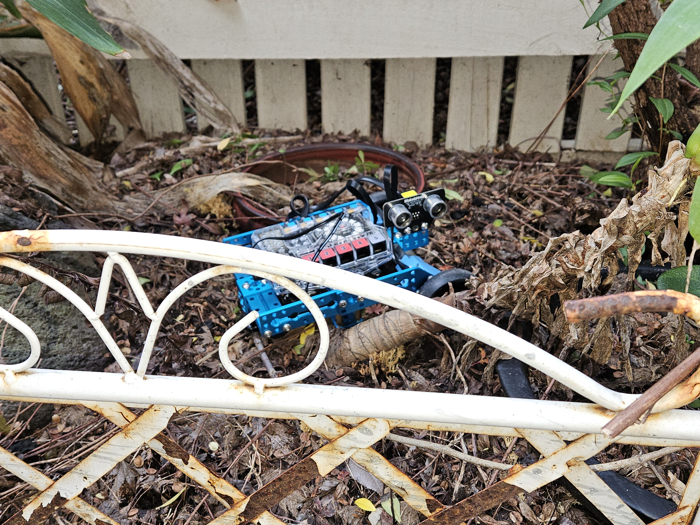
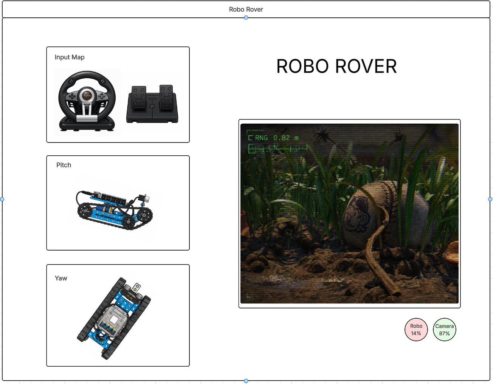

I recently scored a PXN V3 Pro racing wheel on Telstra points, so I thought — why not use it to drive my MBot Ranger around? The plan is to read the wheel's 16-bit steering axis inputs and convert them to differential drive commands over serial, spinning each wheel proportionally for smooth variable-speed turns. I might knock up a quick prototype in the MBlock IDE first, but that only handles binary steering, so ultimately I'll write it in C and flash it via the Arduino IDE.
The GUI will be Tkinter: an input map, a pitch/yaw diagram, and a live video feed. The feed will be a python-vlc frame pulling an RTSP stream from an IP camera app on a spare phone — the rover's eyes. The goal is something that actually feels immersive, not just watching a robot trundle around a room. No autonomy planned at this stage, this was really just an excuse to make use of the wheel — but there's real scope to build on the MBot's ultrasonic sensor and onboard gyroscope once the remote control loop is solid.
